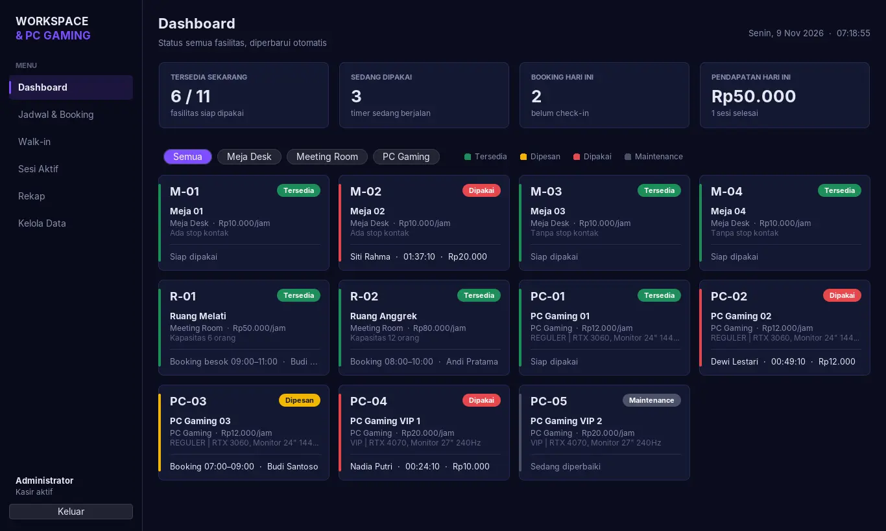
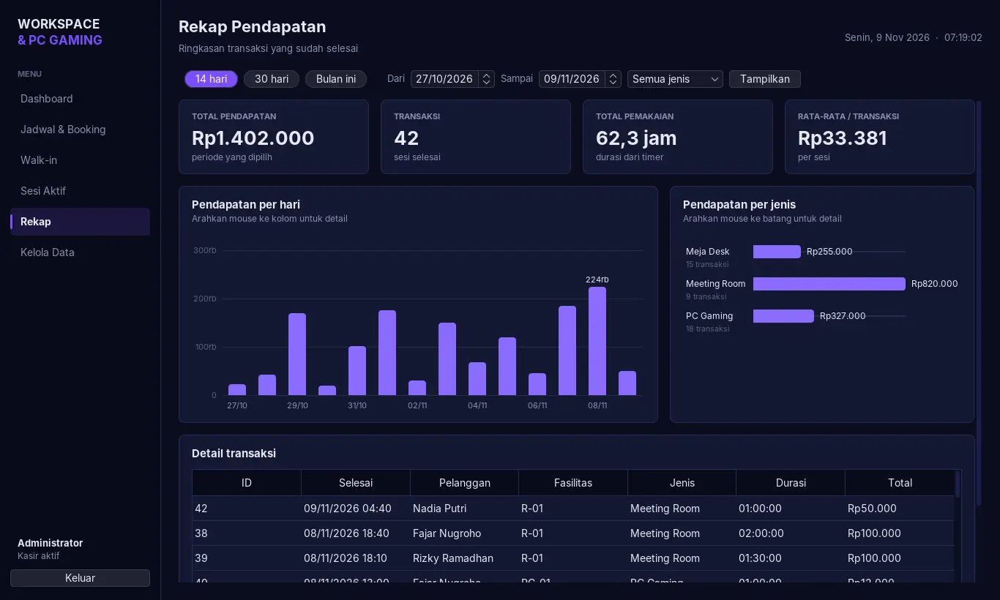

Aplikasi desktop Java Swing + MySQL dengan status ketersediaan real-time, grid jadwal per jam, timer durasi pemakaian, dan rekap pendapatan.

Dashboard kartu berwarna diperbarui otomatis setiap 3 detik, termasuk perubahan dari komputer kasir lain.
Pilih beberapa jam berurutan, lihat estimasi biaya, lalu konfirmasi booking. Slot bentrok otomatis ditolak.
Durasi dan biaya berjalan tampil setiap detik. Saat selesai, biaya dihitung otomatis dan struk ditampilkan.
Pelanggan tanpa booking bisa langsung main, asalkan unitnya kosong dan tidak sedang dibooking.
Grafik pendapatan per hari dan per jenis fasilitas, digambar sendiri dengan Java2D. Arahkan mouse ke batang untuk melihat angkanya.
Tambah, ubah, dan hapus fasilitas serta pelanggan. Data yang punya riwayat transaksi terlindungi.
Tersedia: bisa dipesan
Dipesan: masuk jam booking
Dipakai: timer berjalan
Maintenance: tidak bisa dipesan

Rekap: angka ringkasan, grafik pendapatan per hari & per jenis, dan tabel detail.
Class abstrak Fasilitas diturunkan menjadi tiga subclass. Masing-masing meng-override hitungBiaya() dengan aturan tarifnya sendiri. Inilah polymorphism.
abstract class FasilitasMejaDeskRp10.000/jam · ditagih per 30 menit
MeetingRoomRp50.000–80.000/jam · per jam penuh, minimal 1 jam
PCGamingRp12.000 Reguler / Rp20.000 VIP · per 15 menit
| Pilar | Penerapan di kode |
|---|---|
| Abstraction | Abstract class Fasilitas dan interface Bookable, Dao<T>, Refreshable. |
| Inheritance | MejaDesk, MeetingRoom, PCGaming extends Fasilitas. Setiap panel GUI extends JPanel/JFrame. |
| Encapsulation | Semua atribut private, setter memvalidasi input (tarif > 0, kapasitas > 0, No HP 8–15 digit). |
| Polymorphism | List<Fasilitas> berisi campuran subclass; f.hitungBiaya(menit) otomatis memanggil versi milik subclass-nya. |
brew install mysql lalu brew services start mysql.database/workspace_db.sql di repo GitHub.
mysql -u root < database/workspace_db.sql
workspace-rental.jar dari halaman Releases, lalu dobel klik atau jalankan:
java -jar workspace-rental.jarLogin dengan
admin / admin123.